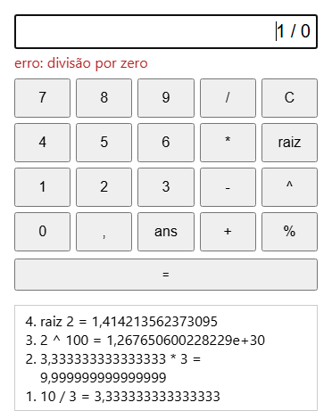

DOMINANDO GO EM 1 ANO
Gabarito comentado das 52 aulas, do #01 ao #52
Go 1.27 · 9 módulos · 122 questões · 6 desafios integradores
Autor Desconhecido · theknowledgeisle.com
| Módulo | Tema | Aulas | Questões |
|---|---|---|---|
| MÓDULO 1 | Fundamentos da Linguagem | #01–#08 | Q1–Q17 |
| MÓDULO 2 | Estruturas de Dados e Coleções | #09–#14 | Q18–Q30 |
| MÓDULO 3 | Pacotes, Módulos e Organização | #15–#18 | Q31–Q42 |
| MÓDULO 4 | Concorrência | #19–#25 | Q43–Q57 |
| MÓDULO 5 | I/O, HTTP e APIs | #26–#31 | Q58–Q69 |
| MÓDULO 6 | Banco de Dados | #32–#37 | Q70–Q82 |
| MÓDULO 7 | Ferramentas, CLI e Qualidade | #38–#43 | Q83–Q94 |
| MÓDULO 8 | Arquitetura e Padrões | #44–#48 | Q95–Q108 |
| MÓDULO 9 | Deploy, Cloud e Carreira | #49–#52 | Q109–Q122 |
| DESAFIOS | Desafios integradores | todas | D1–D6 |
Artigos 01 a 08
goCriadores do Go
Quem são os três criadores do Go e em que empresa trabalhavam quando projetaram a linguagem?
Robert Griesemer (especialista em compiladores, trabalhou no V8 e na HotSpot, a máquina virtual do Java), Rob Pike (um dos autores do Plan 9 e do UTF-8, nos Bell Labs) e Ken Thompson (criador do Unix e da linguagem B, antecessora do C). Os três trabalhavam no Google quando iniciaram o projeto em setembro de 2007, enquanto esperavam uma compilação demorada em C++.
A promessa do Go 1 e a linha go do go.mod
O que é a promessa de compatibilidade do Go 1 (2012)? O que ela garante, o que fica de fora dela e qual é o papel da linha go do go.mod quando a linguagem muda o comportamento de algo, como aconteceu com a variável de laço no Go 1.22?
Programas escritos para a especificação do Go 1 continuam compilando e rodando, sem mudança, em todas as versões 1.x. A promessa cobre a linguagem e a biblioteca padrão. Ficam de fora correções de segurança, bugs (código que dependia de um bug pode quebrar), comportamento não especificado (a ordem de iteração de um map, por exemplo) e pacotes fora da biblioteca padrão.
Quando uma mudança de comportamento vale a pena, ela vem amarrada à linha go do go.mod: no Go 1.22 cada iteração do for passou a ter a sua própria variável, mas só para módulos que declaram go 1.22 ou mais. Um módulo com go 1.21, compilado pelo mesmo toolchain novo, mantém a semântica antiga (o clássico 3 3 3 das closures em laço, em vez de 0 1 2). Desde o Go 1.21 essa linha também é um requisito: um toolchain mais velho que ela se recusa a compilar o módulo, ou baixa a versão pedida.
var x int vs x := 0
Qual é a diferença entre var x int e x := 0 no Go? Em quais escopos cada forma é permitida?
"var x int" é a forma explícita, funciona em qualquer escopo (pacote ou função). "x := 0" é a declaração curta — mais idiomática dentro de funções, proibida no escopo de pacote. Ambas inicializam x como inteiro, mas := infere o tipo do valor atribuído. A declaração curta exige que ao menos uma variável do lado esquerdo seja nova.
Valores zero
Qual é o valor zero de cada tipo: int, float64, string, bool, *int, []int, map[string]int?
int → 0 | float64 → 0.0 | string → "" (string vazia) | bool → false | *int → nil | []int → nil (slice nil, len=0 cap=0) | map[string]int → nil (map nil, não usável para escrita). Toda variável Go tem valor zero garantido — nunca contém lixo de memória.
Divisão inteira 7/2
O que acontece ao tentar dividir dois inteiros em Go: 7 / 2? Como obter 3.5?
7 / 2 retorna 3 (divisão inteira — parte fracionária descartada). Para obter 3.5: converter ao menos um operando para float64 antes da operação: float64(7) / 2 ou 7.0 / 2 ou float64(a) / float64(b) quando as variáveis são inteiras.
Erros que o compilador não deixa passar
Por que if x = 5 { } não compila em Go, ao contrário de C? E por que o compilador também recusa uma variável local declarada e nunca usada, e um import que nada usa?
Em Go a atribuição é um comando, não uma expressão: ela não produz valor, então não pode ser a condição de um if. O erro de C que atribuía e testava ao mesmo tempo, sem aviso, simplesmente não existe aqui.
package main
import "os"
func main() {
x := 1
if x = 5 {
}
y := 2
}q6/main.go:7:7: syntax error: cannot use assignment x = 5 as valueCorrigido o if (x == 5), aparecem os outros dois:
q6/main.go:3:8: "os" imported and not used
q6/main.go:9:2: declared and not used: yVariável e import sem uso são erros, e não avisos, por decisão de projeto: costumam ser resto de código apagado ou sinal de bug (o valor calculado e esquecido), e cada import a mais pesa no tempo de compilação. Para descartar um valor de propósito, use o identificador vazio _.
fmt.Printf com tipo errado
Por que fmt.Printf("%d", "texto") é detectado pelo go vet mas não impede a compilação?
O compilador gera o executável porque Printf aceita ...interface{} — qualquer tipo é aceito sintaticamente. O go vet analisa chamadas de Printf e verifica se os verbos (%d, %s, etc.) correspondem aos tipos dos argumentos, reportando o erro estaticamente sem executar o programa.
Os três laços que o for substitui
Go não tem while nem do-while. Usando só for, escreva: (a) a soma de 1 a 100 no estilo while; (b) um laço que lê números de uma lista até encontrar 0 e soma os anteriores, no estilo do-while (o corpo roda pelo menos uma vez); (c) a soma de (a) com range sobre um inteiro.
package main
import "fmt"
func main() {
// (a) estilo while
soma, n := 0, 1
for n <= 100 {
soma += n
n++
}
fmt.Println("while:", soma)
// (b) estilo do-while: o corpo roda pelo menos uma vez
entradas := []int{7, 3, 0, 9}
total, i := 0, 0
for {
v := entradas[i]
i++
if v == 0 {
break
}
total += v
}
fmt.Println("do-while:", total, "lidos:", i)
// (c) range sobre inteiro (Go 1.22): i vai de 0 a 100
soma2 := 0
for i := range 101 {
soma2 += i
}
fmt.Println("range:", soma2)
}while: 5050
do-while: 10 lidos: 3
range: 5050O for sem condição é o laço infinito; o break no meio dele faz o papel do do-while. O range 101 (Go 1.22) vai de 0 a 100: o limite fica de fora, como em for i := 0; i < 101; i++.
break vs continue
Qual é a diferença entre break e continue dentro de um laço? Dê um exemplo de cada.
break: encerra o laço imediatamente, execução continua após o fechamento do laço.
continue: pula o restante da iteração atual e vai para a próxima.
Exemplo break: encontrar primeiro número par e parar.
Exemplo continue: processar apenas números ímpares, pulando os pares.
Ambos aceitam labels para agir sobre laços externos em laços aninhados.
defer
O que é defer? Em que ordem múltiplos defers são executados? Dê um exemplo prático.
defer agenda a execução de uma função para quando a função atual retornar, independentemente de como retorna (normal, erro ou panic). Múltiplos defers executam em ordem LIFO (último registrado, primeiro executado). Caso de uso clássico: defer arquivo.Close() logo após abrir um arquivo — garante fechamento mesmo se houver erro no processamento.
Função maior(a, b, c int) int
Complete o código abaixo para que a função retorne o maior dos três valores:
func maior(a, b, c int) int {
// escreva aqui
}func maior(a, b, c int) int {
if a >= b && a >= c { return a }
if b >= a && b >= c { return b }
return c
}
// Alternativa idiomática com variável:
func maior2(a, b, c int) int {
m := a
if b > m { m = b }
if c > m { m = c }
return m
}Corrigir 4 erros de código
Corrija o código abaixo (ele tem 4 erros):
package main
func main() {
var x int = 10.5
y := x + "5"
fmt.Println(y)
x++
fmt.Println(x
}O compilador aponta todos (o parêntese que falta é o primeiro a aparecer, porque é erro de sintaxe):
fmt.Println(x, na última linha: falta fechar o parêntese.var x int = 10.5: cannot use 10.5 (untyped float constant) as int value. Use var x float64 = 10.5 ou var x int = 10.y := x + "5": mismatched types int and untyped string. Go não converte sozinho: x + 5 ou strconv.Itoa(x) + "5".fmt não foi importado: undefined: fmt. Falta import "fmt".Função variádica soma
Escreva uma função variádica soma(nums ...int) int que retorna a soma de todos os argumentos.
func soma(nums ...int) int {
total := 0
for _, n := range nums {
total += n
}
return total
}
// Uso: soma(1, 2, 3) → 6
// Uso com slice: s := []int{1,2,3}; soma(s...) → 6O que imprime — ponteiro
O que imprime o código abaixo? Explique por quê.
x := 42
p := &x
*p = 100
fmt.Println(x)Imprime: 100. Explicação: p recebe o endereço de x (&x). *p = 100 acessa e modifica o valor no endereço apontado por p, que é a mesma posição de memória de x. Portanto x é alterado para 100. Esta é a passagem por referência via ponteiro em Go.
Array vs Slice
Qual a diferença entre um array [5]int e um slice []int? Por que slices são mais usados no dia a dia?
Array [5]int: tamanho fixo em tempo de compilação, faz parte do tipo, passado por VALOR (cópia de todos os elementos). Slice []int: tamanho dinâmico, é uma visão sobre um array subjacente (ponteiro + len + cap), passado por valor do header (3 palavras) — eficiente. Slices são preferidos porque crescem com append, têm API rica e não impõem tamanho fixo.
Realocação do append
O que acontece quando append precisa aumentar a capacidade de um slice? Explique o mecanismo de realocação.
Quando append precisa adicionar um elemento além da capacidade atual, Go aloca um novo array com capacidade maior (tipicamente o dobro para slices pequenos), copia todos os elementos existentes para o novo array e retorna um novo slice header apontando para o novo array. O array antigo é coletado pelo GC se não há mais referências. Por isso append DEVE ter seu retorno atribuído.
Remover duplicatas preservando ordem
Escreva uma função que receba um slice de strings e retorne um novo slice sem duplicatas, preservando a ordem.
func semDuplicatas(itens []string) []string {
visto := make(map[string]struct{}, len(itens))
resultado := make([]string, 0, len(itens))
for _, item := range itens {
if _, existe := visto[item]; !existe {
visto[item] = struct{}{}
resultado = append(resultado, item)
}
}
return resultado
}Artigos 09 a 14
error e tratamento idiomático de falhasOrdem não garantida em maps
Por que a ordem de iteração sobre um map em Go é não garantida? O que fazer quando a ordem importa?
Maps em Go são implementados como hash tables. A ordem de iteração é intencionalmente randomizada a cada execução (o runtime embaralha propositalmente) para evitar que programadores dependam de um comportamento não especificado. Quando a ordem importa: extraia as chaves para um []string, ordene com sort.Strings(), depois itere pelo slice de chaves.
var m map vs make(map)
Qual é a diferença entre declarar var m map[string]int e m := make(map[string]int)? O que acontece ao escrever em cada um?
var m map[string]int declara m como nil — não inicializado. Leitura retorna valor zero (seguro), mas ESCRITA causa panic: "assignment to entry in nil map". make(map[string]int) cria e inicializa o map, pronto para leitura e escrita. Regra: sempre use make ou literal de map antes de escrever.
Comma ok em maps
Explique o idioma 'comma ok' para maps: v, ok := m["chave"]. Quando ele é necessário?
v, ok := m["chave"] — v recebe o valor (ou zero value se ausente), ok é bool indicando se a chave existe. Necessário quando 0/""/false é um valor legítimo armazenado no map e você precisa distingui-lo de chave ausente. Sem comma ok, ambos os casos retornariam o mesmo resultado.
Campos embutidos vs herança
O que são campos embutidos (embedding) em structs? Como eles diferem de herança?
Embedding em Go: um tipo é declarado como campo sem nome dentro de outro. Seus métodos e campos são promovidos — acessíveis diretamente no tipo externo. Diferença da herança: (1) não é hierárquico — sem polimorfismo automático por tipo; (2) o método promovido não é virtual — chama o método do tipo embutido, não do externo; (3) múltiplos embeddings são possíveis sem o problema do diamante; (4) é composição, não especialização.
Receiver por valor vs ponteiro
Qual é a diferença entre um receiver por valor (c Conta) e por ponteiro (c *Conta)? Quando usar cada um?
Valor (c Conta): o método recebe uma CÓPIA. Modificações não afetam o original. Use para tipos pequenos e métodos que apenas leem. Ponteiro (*Conta): o método recebe o endereço. Modificações afetam o original. Use quando o método modifica estado, quando a struct é grande (cópia cara) ou quando o tipo contém mutex. Regra de ouro: se algum método usa ponteiro, use ponteiro em todos os métodos do tipo.
Implementação implícita de interfaces
Por que Go usa implementação implícita de interfaces? Que vantagem isso traz em relação ao implements explícito de Java?
Em Go, um tipo implementa uma interface automaticamente se tiver todos os métodos requeridos — sem declaração explícita. Vantagem: desacopla completamente definidor da interface de implementador. Um tipo de pacote externo pode satisfazer sua interface local. Facilita mocking em testes. Reduz acoplamento. Permite que código existente implemente novas interfaces sem modificação.
Tipo error e erros customizados
O que é o tipo error? Como criar erros customizados que carregam informações estruturadas?
error é uma interface com um único método: Error() string. Qualquer tipo que implemente Error() string é um error. Para erros estruturados: declare uma struct com campos relevantes e implemente Error() string. Isso permite extrair informações específicas via errors.As(). Exemplo: type ErroHTTP struct { Codigo int; URL string }; func (e *ErroHTTP) Error() string { return fmt.Sprintf("HTTP %d: %s", e.Codigo, e.URL) }
errors.Is vs errors.As
Qual a diferença entre errors.Is e errors.As? Dê um exemplo de uso de cada um.
errors.Is(err, alvo): verifica se algum erro na cadeia de wrapping É igual ao alvo (comparação de identidade ou método Is). Use para erros sentinela: errors.Is(err, sql.ErrNoRows).
errors.As(err, &alvo): percorre a cadeia e preenche alvo com o primeiro erro do tipo correspondente. Use para extrair dados de erros customizados: var e *ErroHTTP; if errors.As(err, &e) { fmt.Println(e.Codigo) }.
Wrapping com %w
O que é wrapping de erro com %w no fmt.Errorf? Por que isso é importante para a rastreabilidade?
fmt.Errorf("contexto: %w", err) cria um novo erro que ENVOLVE o original, preservando-o na cadeia. Isso permite: (1) adicionar contexto em cada camada sem perder a causa raiz; (2) usar errors.Is e errors.As para inspecionar o erro original através das camadas; (3) mensagens de erro descritivas como "carregarConfig: lerArquivo: open config.json: no such file or directory".
panic e recover
Explique panic e recover. Em que situações seu uso é apropriado versus o retorno normal de error?
panic: interrompe a execução da goroutine atual e começa a desenrolar a pilha. recover: captura um panic dentro de uma função defer, permitindo que o programa continue. Uso apropriado de panic: bugs de programação irrecuperáveis (invariante violada, uso incorreto de API interna), index out of bounds, nil pointer. Use return error para falhas esperadas e recuperáveis (arquivo não encontrado, timeout, validação). Regra: panic nos seus erros de programação, error para falhas do usuário/ambiente.
Tipo Pilha genérica
Implemente um tipo Pilha genérica (stack) usando slice, com os métodos Push, Pop e Tamanho.
type Pilha[T any] struct {
itens []T
}
func (p *Pilha[T]) Push(item T) {
p.itens = append(p.itens, item)
}
func (p *Pilha[T]) Pop() (T, bool) {
var zero T
if len(p.itens) == 0 { return zero, false }
n := len(p.itens) - 1
item := p.itens[n]
p.itens = p.itens[:n]
return item, true
}
func (p *Pilha[T]) Tamanho() int { return len(p.itens) }Interface Forma + implementações
Crie uma interface Forma com os métodos Area() float64 e Perimetro() float64. Implemente-a para Retangulo e Circulo. Escreva uma função descrever(f Forma) que imprime área e perímetro.
type Forma interface {
Area() float64
Perimetro() float64
}
type Retangulo struct{ Largura, Altura float64 }
func (r Retangulo) Area() float64 { return r.Largura * r.Altura }
func (r Retangulo) Perimetro() float64 { return 2 * (r.Largura + r.Altura) }
type Circulo struct{ Raio float64 }
func (c Circulo) Area() float64 { return math.Pi * c.Raio * c.Raio }
func (c Circulo) Perimetro() float64 { return 2 * math.Pi * c.Raio }
func descrever(f Forma) {
fmt.Printf("Área: %.2f | Perímetro: %.2f\n", f.Area(), f.Perimetro())
}interface{} com ponteiro nil
O que imprime o código abaixo? Existe algum problema? Corrija se necessário.
var i interface{} = (*int)(nil)
fmt.Println(i == nil)Imprime: false. Problema: a interface i contém informação de TIPO (*int) mesmo que o valor seja nil. Uma interface é nil apenas quando AMBOS o tipo e o valor são nil. Aqui o tipo é *int, então i != nil. Correto: retornar nil diretamente (sem atribuir a uma variável tipada) quando a intenção é retornar interface nil.
Artigos 15 a 18
Visibilidade em Go
Como Go controla visibilidade de identificadores? Qual a regra que determina se algo é exportado?
Regra única: identificadores que começam com letra MAIÚSCULA são exportados (públicos, visíveis fora do pacote). Letras minúsculas são não-exportados (privados ao pacote). Aplica-se a funções, tipos, variáveis, constantes, campos de struct e métodos. Não existem modificadores como public/private/protected.
Diretório internal/
Para que serve o diretório internal/? Quem pode importar pacotes dentro dele?
Pacotes dentro de internal/ só podem ser importados por código dentro da árvore de diretórios pai do diretório internal/. Código fora dessa árvore recebe erro de compilação ao tentar importar. Serve para criar APIs internas que não devem ser usadas externamente, sem precisar tornar tudo não-exportado.
go.mod vs go.sum
Qual a diferença entre go.mod e go.sum? Por que ambos devem ser commitados no repositório?
go.mod: manifesto do módulo — declara nome do módulo, versão mínima do Go e dependências diretas/indiretas com versões. go.sum: registra hashes criptográficos do conteúdo esperado de cada dependência. Ambos devem ser commitados: go.mod para reprodutibilidade de builds, go.sum para segurança (detecta se o conteúdo de uma dependência foi alterado maliciosamente).
go mod tidy
O que faz go mod tidy? Quando deve ser executado?
Analisa todo o código do módulo, REMOVE do go.mod dependências que não são importadas por nenhum arquivo .go, ADICIONA dependências que estão sendo importadas mas não declaradas, e atualiza o go.sum. Deve ser executado antes de todo commit e sempre que adicionar ou remover imports.
Minimum Version Selection
Explique o Minimum Version Selection (MVS) do Go. Por que ele é preferível a 'pegar a versão mais recente'?
MVS seleciona a versão MÍNIMA que satisfaz todos os requisitos — não a mais recente. Vantagem: builds são determinísticos e conservadores. Atualizar uma dependência nunca atualiza automaticamente outras. O comportamento é previsível. Com "pegar a mais recente", uma atualização de qualquer dependência pode puxar novas versões transitivas e quebrar builds silenciosamente.
5 pacotes da biblioteca padrão
Cite 5 pacotes da biblioteca padrão e suas responsabilidades principais.
fmt: formatação e I/O (Printf, Println, Errorf, Scanf).
net/http: servidor e cliente HTTP completos.
encoding/json: serialização e deserialização JSON.
sync: primitivas de sincronização (Mutex, WaitGroup, Once, Map).
time: tipos e funções de tempo, duração, formatação e parsing.
Bônus: os/exec (subprocessos), crypto/sha256 (criptografia), path/filepath (caminhos portáveis).
json.Marshal vs json.NewEncoder
Qual a diferença entre json.Marshal e json.NewEncoder? Quando usar cada um?
Marshal: serializa para []byte em memória. Adequado para valores pequenos onde o resultado inteiro é necessário de uma vez.
NewEncoder(w).Encode(v): escreve diretamente em um io.Writer (arquivo, conexão, ResponseWriter) sem buffer intermediário. Mais eficiente para streams e grandes volumes. Preferir Encoder em handlers HTTP e I/O de arquivo.
time.After vs time.NewTimer
O que é time.After e como ele difere de time.NewTimer? Qual o problema de usar time.After dentro de loops?
time.After(d) cria um Timer e devolve só o canal dele, sem dar acesso ao timer para pará-lo. Até o Go 1.22, um timer que não disparou nem foi parado ficava vivo até o prazo vencer, e um select com time.After(time.Minute) dentro de um laço rápido acumulava milhares deles na memória.
Desde o Go 1.23 (em módulos com go 1.23 ou mais no go.mod), timers sem referência são coletados mesmo sem Stop(), e esse vazamento acabou. time.NewTimer continua sendo a escolha quando você precisa cancelar (Stop()) ou reaproveitar (Reset()) o mesmo timer, como num prazo de inatividade que reinicia a cada mensagem.
Table-driven tests
Como funciona o padrão de tabela de casos em testes Go (table-driven tests)? Quais são suas vantagens?
Define-se uma slice de structs com entradas e saídas esperadas. Um único for itera sobre todos os casos, chamando t.Run(caso.nome, func) para criar subtestes nomeados. Vantagens: (1) fácil adicionar casos sem duplicar código; (2) cada caso falha independentemente; (3) casos podem ser rodados individualmente com -run; (4) o código de teste é DRY e legível.
t.Helper()
O que faz t.Helper() em uma função de teste auxiliar? Por que é importante?
Marca a função como helper de teste. Quando essa função reporta uma falha (t.Error, t.Fatal), a linha apontada no erro é a do CHAMADOR da função helper, não a linha dentro do helper. Sem t.Helper(), todas as falhas apontariam para dentro da função auxiliar, dificultando identificar qual test case falhou.
Tabela de casos para Palindromo
Escreva um teste de tabela de casos para a função Palindromo(s string) bool cobrindo pelo menos 6 casos, incluindo strings com espaços, maiúsculas e caracteres especiais.
func Palindromo(s string) bool {
var r []rune
for _, c := range strings.ToLower(s) {
if unicode.IsLetter(c) || unicode.IsDigit(c) {
r = append(r, c)
}
}
for i, j := 0, len(r)-1; i < j; i, j = i+1, j-1 {
if r[i] != r[j] {
return false
}
}
return true
}func TestPalindromo(t *testing.T) {
casos := []struct {
entrada string
esperado bool
}{
{"arara", true},
{"Go", false},
{"", true},
{"Socorram-me, subi no ônibus em Marrocos", false}, // ô × o: acento conta
{"A base do teto desaba", true},
{"Ame a ema!", true},
{"12321", true},
{"Roma me tem amor.", true},
}
for _, tc := range casos {
t.Run(tc.entrada, func(t *testing.T) {
if got := Palindromo(tc.entrada); got != tc.esperado {
t.Errorf("Palindromo(%q) = %v, esperado %v", tc.entrada, got, tc.esperado)
}
})
}
}Normalizar antes de comparar (minúsculas, só letras e dígitos) é o que faz frases com espaço e pontuação funcionarem. Trabalhar com []rune, e não com bytes, mantém as letras acentuadas inteiras. O caso do "ônibus" mostra a decisão que sobra: com acento contando, a frase famosa não é palíndromo; para ignorar acentos, remova-os antes (por exemplo com golang.org/x/text/unicode/norm).
Benchmarks para contagem de palavras
Escreva uma função de benchmark para medir a performance de duas implementações de contagem de palavras: uma usando strings.Split e outra usando strings.Fields.
var texto = "o rato roeu a roupa do rei de roma"
func BenchmarkContarComSplit(b *testing.B) {
for b.Loop() {
_ = len(strings.Split(texto, " "))
}
}
func BenchmarkContarComFields(b *testing.B) {
for b.Loop() {
_ = len(strings.Fields(texto))
}
}for b.Loop() (Go 1.24) substitui o antigo for i := 0; i < b.N; i++: o que vem antes do laço já fica fora da medição, sem precisar de b.ResetTimer(), e o compilador não consegue eliminar a chamada medida. Nesta frase, com um espaço entre cada palavra, os dois empatam (cerca de 130 ns e uma alocação cada, numa máquina de 16 núcleos); a diferença real é de comportamento: Fields trata vários espaços, tabs e quebras de linha como um separador só, e Split devolve strings vazias entre espaços repetidos.
Artigos 19 a 25
O que é goroutine
O que é uma goroutine? Em que ela difere de uma thread do sistema operacional em termos de uso de memória?
Goroutine é uma função executada de forma concorrente, gerenciada pelo runtime Go (não pelo SO). Começa com apenas 2 KB de stack (cresce dinamicamente até GB se necessário). Uma thread do SO ocupa 1–8 MB fixos. Isso permite ter dezenas de milhares de goroutines simultâneas sem exaurir memória. Criar uma goroutine também é bem mais barato que criar uma thread, porque não envolve o sistema operacional.
Scheduler M:N
O que é o scheduler M:N do Go? Como ele mapeia goroutines para threads do SO?
M goroutines são mapeadas em N threads do SO (onde N = GOMAXPROCS, padrão = número de CPUs). O scheduler Go distribui goroutines entre as threads, alternando-as em pontos de I/O, syscalls, chamadas de função e periodicamente. Isso permite paralelismo real em múltiplos núcleos e concorrência eficiente em I/O sem bloquear threads do SO.
Channel com buffer vs sem buffer
Qual é a diferença entre um channel com buffer e sem buffer? Quando cada um deve ser usado?
Sem buffer (make(chan T)): cada envio bloqueia até haver receptor, e vice-versa. Garante sincronização precisa (rendezvous). Com buffer (make(chan T, n)): aceita até n valores sem bloquear o emissor. Bloqueia apenas quando buffer cheio (emissor) ou vazio (receptor). Use sem buffer quando sincronização importa; com buffer para desacoplar levemente produtor e consumidor ou absorver picos.
Done channel e close
O que é o padrão 'done channel'? Como close(done) difere de enviar um valor para done?
done channel carrega o sinal de encerramento para goroutines. close(done) fecha o canal — TODAS as goroutines aguardando <-done desbloqueiam simultaneamente (broadcast). Enviar um valor acordaria apenas UM receptor. Por isso close é usado para sinalizar múltiplas goroutines de uma vez. Tipo struct{} ocupa zero bytes — o canal serve apenas como sinal, sem transportar dados.
Padrão de pipeline
Explique o padrão de pipeline com channels. Quais são os papéis de produtor, estágio e consumidor?
Pipeline é uma cadeia de estágios conectados por channels. Cada estágio: (1) recebe valores de um channel de entrada, (2) processa/transforma, (3) envia para um channel de saída. Cada estágio roda em sua própria goroutine. O fechamento do channel upstream sinaliza término downstream. Permite processamento concorrente com backpressure natural.
Fan-out e fan-in
O que é fan-out? O que é fan-in? Como esses padrões são implementados com goroutines e channels?
Fan-out: distribuir trabalho de um channel para múltiplos workers que leem do mesmo channel. Cada worker processa itens em paralelo. Fan-in: combinar múltiplos channels de saída em um único channel. Uma goroutine por channel de entrada copia valores para o channel unificado, controlado por WaitGroup. A combinação fan-out → processamento → fan-in é o padrão de processamento paralelo mais comum.
Mutex vs RWMutex
Qual a diferença entre sync.Mutex e sync.RWMutex? Em que cenário RWMutex oferece vantagem?
Mutex: uma goroutine de cada vez — tanto para leitura quanto escrita. RWMutex: múltiplas goroutines podem ler simultaneamente (RLock/RUnlock), mas escrita é exclusiva (Lock/Unlock). Vantagem do RWMutex: quando leituras são muito mais frequentes que escritas (ex: cache), múltiplos readers concorrentes melhoram throughput significativamente.
Race condition e detector
O que é uma race condition? Como o detector de races do Go (-race) funciona?
Race condition: o resultado do programa depende da ordem de execução de goroutines, que não é garantida. O detector (-race) instrumenta o binário para registrar TODOS os acessos à memória com timestamps e goroutine IDs. Se detecta dois acessos concorrentes ao mesmo endereço onde ao menos um é escrita e sem sincronização entre eles, reporta a race com stack traces de ambas as goroutines.
sync.Once thread-safety
Por que sync.Once é thread-safe? Como ele garante que a função seja executada exatamente uma vez?
Once usa internamente um Mutex e um flag de estado. Quando Do(f) é chamado: verifica atomicamente se f já foi executada. Se não, executa f sob o lock e marca como executada. Se sim, retorna imediatamente sem executar. Todas as goroutines que chamam Do enquanto f está executando aguardam o lock. Após f completar, todas retornam sem executar novamente.
Pacote context
Qual é o propósito do pacote context? Explique a árvore de contextos e como o cancelamento se propaga.
Context propaga cancelamento, deadline e valores pela árvore de chamadas. Forma uma árvore: cancelar um pai cancela automaticamente todos os filhos. context.WithCancel: cancelamento manual via função cancel(). context.WithTimeout: cancela automaticamente após duração. context.WithDeadline: cancela em instante absoluto. Todo código que pode bloquear (DB, HTTP, goroutines) deve aceitar ctx e verificar ctx.Done().
Goroutine leaks
O que é uma goroutine leak? Cite 3 causas comuns e como evitá-las.
Causas comuns: (1) channel sem receptor — goroutine envia para channel que nunca será lido; (2) channel nunca fechado — goroutine fica em for range ch infinitamente; (3) loop sem saída — sem verificação de ctx.Done(). Prevenção: sempre ter condição de saída via ctx.Done() ou close(done). Detecção: goleak (go.uber.org/goleak) em testes, runtime.NumGoroutine() em métricas.
Variável de loop em closures
O que é o problema da variável de loop capturada em closures? Como ele foi corrigido no Go 1.22?
Antes do Go 1.22: o closure capturava a VARIÁVEL do loop por referência (não o valor). Todas as goroutines liam o mesmo i, que ao final do loop valia o último valor. Solução: i := i dentro do loop criava nova variável local a cada iteração. No Go 1.22: cada iteração cria automaticamente nova variável, desde que o go.mod declare go 1.22 ou mais; com uma linha go anterior, o comportamento antigo continua.
Busca concorrente de URLs
Implemente uma função buscarConcorrente(urls []string) []Resultado que faz requisições HTTP para todas as URLs simultaneamente e coleta os resultados. Use WaitGroup e channel.
type Resultado struct {
URL string
Status int
Erro error
}
func buscarConcorrente(urls []string) []Resultado {
resultados := make(chan Resultado, len(urls))
var wg sync.WaitGroup
cliente := &http.Client{Timeout: 10 * time.Second}
for _, url := range urls { // desde o Go 1.22, cada iteração tem o seu url
wg.Add(1)
go func() {
defer wg.Done()
resp, err := cliente.Get(url)
if err != nil {
resultados <- Resultado{URL: url, Erro: err}
return
}
resp.Body.Close()
resultados <- Resultado{URL: url, Status: resp.StatusCode}
}()
}
go func() { wg.Wait(); close(resultados) }()
var lista []Resultado
for r := range resultados {
lista = append(lista, r)
}
return lista
}O canal tem buffer do tamanho da lista, então nenhuma goroutine fica presa esperando leitor. A goroutine extra fecha o canal depois do wg.Wait(), e é isso que encerra o for range. O antigo url := url dentro do laço não é mais necessário desde o Go 1.22.
Corrigir race condition
O código abaixo tem uma race condition. Identifique-a e corrija usando sync/atomic ou Mutex.
var contador int
for i := 0; i < 1000; i++ {
go func() { contador++ }()
}
time.Sleep(time.Second)
fmt.Println(contador)package main
import (
"fmt"
"sync"
"sync/atomic"
)
func main() {
// Solução 1: sync/atomic
var contador atomic.Int64
var wg sync.WaitGroup
for range 1000 {
wg.Go(func() { contador.Add(1) }) // WaitGroup.Go: Go 1.25
}
wg.Wait() // espera de verdade, em vez de torcer com time.Sleep
fmt.Println("atomic:", contador.Load())
// Solução 2: Mutex
var mu sync.Mutex
contador2 := 0
for range 1000 {
wg.Go(func() {
mu.Lock()
contador2++
mu.Unlock()
})
}
wg.Wait()
fmt.Println("mutex:", contador2)
}atomic: 1000
mutex: 1000A race está em contador++: ler, somar e gravar são três passos, e duas goroutines podem ler o mesmo valor antes de qualquer uma gravar. O time.Sleep do enunciado é o segundo erro: ele não garante que as goroutines terminaram, só torce por isso. go run -race aponta o problema na versão original.
Semáforo com channel com buffer
Implemente um semáforo usando channel com buffer que limita o número de goroutines simultâneas a N.
type Semaforo chan struct{}
func NovoSemaforo(limite int) Semaforo {
return make(Semaforo, limite)
}
func (s Semaforo) Adquirir(ctx context.Context) error {
select {
case s <- struct{}{}: return nil
case <-ctx.Done(): return ctx.Err()
}
}
func (s Semaforo) Liberar() { <-s }
// Uso: sem.Adquirir(ctx) antes, defer sem.Liberar() depois.Artigos 26 a 31
os.ReadFile vs bufio.Scanner
Qual a diferença entre os.ReadFile e bufio.Scanner para ler um arquivo? Quando usar cada abordagem?
os.ReadFile: lê o arquivo INTEIRO para []byte em memória. Simples e adequado para arquivos pequenos (configs, templates). bufio.Scanner: lê incrementalmente, linha por linha ou por tokens, usando buffer interno. Adequado para arquivos grandes (logs, CSV de GBs) onde carregar tudo em memória seria problemático. Scanner também lê de qualquer io.Reader (stdin, conexões de rede).
bufio.Writer e Flush
Por que bufio.Writer melhora a performance de escrita? O que acontece se Flush() não for chamado?
bufio.Writer agrupa múltiplas escritas pequenas em um buffer em memória, fazendo uma única syscall quando o buffer enche ou quando Flush() é chamado. Reduz drasticamente o número de syscalls. Se Flush() não for chamado: os dados no buffer são PERDIDOS silenciosamente — o arquivo ficará incompleto. Sempre use defer writer.Flush() ou verifique o erro de Flush().
Tags JSON de struct
Explique as tags de struct JSON: json:"-", json:"nome,omitempty" e json:",string". O que cada uma faz?
json:"-": o campo é SEMPRE omitido na serialização e ignorado na deserialização. Útil para senhas e dados internos.
json:"nome,omitempty": usa "nome" como chave JSON; omite o campo se for o valor zero do tipo (0, "", false, nil, slice/map vazio).
json:",string": serializa o valor como string JSON (ex: 42 vira "42"). Útil para interoperabilidade com sistemas que esperam números como strings.
Marshal vs MarshalIndent vs RawMessage
Qual a diferença entre json.Marshal e json.MarshalIndent? Quando json.RawMessage é útil?
Marshal: JSON compacto em uma linha.
MarshalIndent(v, "", " "): JSON formatado com indentação, legível por humanos. Útil para arquivos de config e logs de debug.
json.RawMessage: armazena JSON bruto sem interpretar. Permite deserializar parte do JSON em momento posterior baseado em um campo discriminador (ex: campo "tipo" determina como deserializar "payload").
Perigo do http.DefaultClient
Por que nunca usar http.DefaultClient em produção? O que pode acontecer sem timeout configurado?
http.DefaultClient não tem Timeout configurado. Uma requisição para um servidor que nunca responde bloqueia a goroutine indefinidamente. Em servidores web, isso significa que todas as goroutines podem eventualmente ficar bloqueadas aguardando respostas, esgotando o pool e derrubando o serviço. Sempre crie &http.Client{Timeout: N} explicitamente.
Melhorias no roteador Go 1.22
Como o Go 1.22 melhorou o roteador net/http? Dê exemplos de padrões de rota que agora são suportados.
Go 1.22 adicionou ao ServeMux: (1) Método HTTP no padrão: "GET /usuarios/{id}" — rota só aceita GET; (2) Parâmetros de caminho: {id} extraído via r.PathValue("id"); (3) Coringa {path...} para subárvores. Antes: apenas prefixos sem método, sem parâmetros. Isso elimina a necessidade de roteadores externos para casos simples.
Middleware em Go
O que é um middleware em Go? Qual é sua assinatura padrão e como middlewares são encadeados?
Um middleware é uma função que recebe http.Handler e retorna http.Handler, envolvendo o handler original. Assinatura: func(http.Handler) http.Handler. Encadeamento: aplicar da direita para esquerda (interno para externo) ou usar uma função de encadeamento. Cada middleware executa código antes, chama o próximo (prox.ServeHTTP(w, r)), e pode executar código depois.
net/http/httptest
Para que serve o pacote net/http/httptest? Como ele facilita testes de handlers HTTP?
httptest.NewRequest(method, url, body) cria *http.Request para testes sem HTTP real.
httptest.NewRecorder() cria ResponseRecorder que implementa ResponseWriter e captura status, headers e body escritos pelo handler.
Permite testar handlers unitariamente sem iniciar servidor, sem porta, sem goroutines extras. Testes são rápidos, determinísticos e não dependem de infraestrutura.
Graceful shutdown
O que é graceful shutdown de um servidor HTTP? Por que é importante e como é implementado?
Importância: ao receber SIGTERM/SIGINT (Ctrl+C, deploy), não interromper requisições em andamento abruptamente. Implementação: (1) iniciar servidor em goroutine; (2) bloquear main em canal de sinal (signal.Notify); (3) ao receber sinal, chamar server.Shutdown(ctx) com timeout; (4) Shutdown fecha os listeners (para de aceitar conexões novas), espera as requisições em andamento terminarem ou o prazo do contexto vencer, e só então retorna.
Retry com backoff exponencial e jitter
Explique o padrão de retry com backoff exponencial e jitter. Por que o jitter é necessário?
Backoff exponencial: espera cresce a cada tentativa (100ms, 200ms, 400ms...) — reduz carga no serviço com falha. Sem jitter: todos os clientes tentam de novo ao mesmo tempo após timeout, causando "thundering herd" — pico de carga sincronizado que pode derrubar novamente o serviço que se recuperou. Jitter: adiciona aleatoriedade à espera (espera ± 10%) — dispersa as tentativas no tempo.
Rate limiting por IP
Escreva um middleware de rate limiting simples que limita cada IP a 10 requisições por minuto, retornando HTTP 429 quando o limite é excedido.
type rateLimiter struct {
mu sync.Mutex
contagem map[string][]time.Time
limite int
janela time.Duration
}
func novoRateLimiter(limite int, janela time.Duration) *rateLimiter {
return &rateLimiter{contagem: make(map[string][]time.Time), limite: limite, janela: janela}
}
func (r *rateLimiter) permitir(ip string) bool {
r.mu.Lock()
defer r.mu.Unlock()
agora := time.Now()
validos := r.contagem[ip][:0]
for _, t := range r.contagem[ip] {
if agora.Sub(t) < r.janela {
validos = append(validos, t)
}
}
if len(validos) >= r.limite {
r.contagem[ip] = validos
return false
}
r.contagem[ip] = append(validos, agora)
return true
}
func middlewareRateLimit(lim *rateLimiter) func(http.Handler) http.Handler {
return func(next http.Handler) http.Handler {
return http.HandlerFunc(func(w http.ResponseWriter, r *http.Request) {
ip, _, err := net.SplitHostPort(r.RemoteAddr) // RemoteAddr é "ip:porta"
if err != nil {
ip = r.RemoteAddr
}
if !lim.permitir(ip) {
http.Error(w, "Too Many Requests", http.StatusTooManyRequests)
return
}
next.ServeHTTP(w, r)
})
}
}Cuidado com r.RemoteAddr: ele vem como "ip:porta", e cada conexão nova usa outra porta. Sem o net.SplitHostPort, o mesmo cliente nunca bate no limite. Atrás de um proxy, o IP real vem num cabeçalho (X-Forwarded-For), que só deve ser aceito se a requisição veio do proxy. Esta versão também nunca apaga IPs antigos do mapa: em produção, uma limpeza periódica (ou golang.org/x/time/rate com expiração) evita que a memória cresça sem fim.
Ler CSV para map
Implemente uma função lerCSVParaMap(caminho string) ([]map[string]string, error) que lê um arquivo CSV e retorna cada linha como um mapa de nome-coluna → valor.
func lerCSVParaMap(caminho string) ([]map[string]string, error) {
f, err := os.Open(caminho)
if err != nil {
return nil, err
}
defer f.Close()
reader := csv.NewReader(f)
cabecalho, err := reader.Read()
if err != nil {
return nil, fmt.Errorf("cabeçalho: %w", err)
}
var resultado []map[string]string
for {
linha, err := reader.Read()
if errors.Is(err, io.EOF) {
break
}
if err != nil {
return nil, err // linha malformada: falha, não some em silêncio
}
m := make(map[string]string, len(cabecalho))
for i, col := range cabecalho {
m[col] = linha[i]
}
resultado = append(resultado, m)
}
return resultado, nil
}O laço só termina sozinho em io.EOF. Qualquer outro erro, como uma linha com campos a menos (record on line 3: wrong number of fields), é devolvido: tratar todo erro como fim de arquivo faria a função devolver metade dos dados sem avisar ninguém.
Artigos 32 a 37
SQL injection e placeholders
Por que nunca interpolar strings do usuário diretamente em queries SQL? Como placeholders (? ou $1) previnem SQL injection?
Interpolar strings diretamente: "SELECT * FROM users WHERE name = '" + nome + "'" permite que nome = "'; DROP TABLE users; --" destrua o banco. Placeholders (? no MySQL, $1 no PostgreSQL): o driver envia a query e os parâmetros SEPARADAMENTE ao banco. O banco trata os parâmetros como dados literais, nunca como SQL. Nenhum caractere do dado pode "escapar" para o SQL.
Pool de conexões do sql.DB
O que é o pool de conexões do sql.DB? Quais são as configurações mais importantes e o que cada uma controla?
sql.DB é um pool, não uma conexão. Configurações:
SetMaxOpenConns(n): máximo de conexões simultâneas (padrão: ilimitado — SEMPRE configure).
SetMaxIdleConns(n): conexões ociosas mantidas no pool (padrão: 2).
SetConnMaxLifetime(d): tempo máximo de vida de uma conexão (útil quando o banco tem timeout).
SetConnMaxIdleTime(d): tempo máximo ociosa antes de ser fechada.
Valores típicos: 25 open, 10 idle, 5min lifetime, 2min idle time.
rows.Close() obrigatório
Por que rows.Close() é obrigatório e deve usar defer? O que acontece se não for chamado?
rows.Close() libera a conexão de volta ao pool. Enquanto rows não for fechado, a conexão fica ocupada. Em código de alta carga, esquecer Close() esgota o pool — todas as conexões ficam presas em cursores abertos, novas queries ficam bloqueadas aguardando conexão. defer rows.Close() logo após QueryContext() garante liberação mesmo em caso de erro.
QueryRowContext vs QueryContext
Qual a diferença entre QueryRowContext e QueryContext? Quando usar cada um?
QueryRowContext: espera exatamente 1 linha. Retorna *Row, o scan é feito diretamente. Se não encontrar, retorna sql.ErrNoRows. Se encontrar mais de uma, retorna apenas a primeira. Use para buscas por ID ou chave única.
QueryContext: retorna *Rows para iteração. Use para queries que retornam 0 ou mais linhas. Requer rows.Next() / rows.Scan() / rows.Close() / rows.Err().
SQLite WAL mode
Explique o _journal_mode=WAL do SQLite. Que vantagem ele oferece sobre o modo padrão?
No modo padrão (DELETE journal), escritas bloqueiam completamente o banco — nenhuma leitura pode ocorrer. No modo WAL (Write-Ahead Logging), escritas são registradas em arquivo separado. Múltiplos leitores podem ler o banco enquanto uma escrita está em andamento (leitores veem estado anterior à escrita em curso). Melhora drasticamente o throughput em aplicações com mix de leitura e escrita.
MaxOpenConns(1) no SQLite
Por que SetMaxOpenConns(1) é recomendado para SQLite? O que acontece com escritas concorrentes sem isso?
SQLite só suporta um escritor por vez (file-level lock). Com múltiplas conexões, escritas concorrentes resultam em "database is locked" error. Com MaxOpenConns(1), todas as operações passam pela mesma conexão, serializando acessos automaticamente. Em modo WAL, leituras concorrentes são seguras, mas escritas ainda precisam ser serializadas.
lib/pq vs pgx
Qual a diferença entre lib/pq e pgx como drivers PostgreSQL? Por que pgx é preferido para novos projetos?
lib/pq: driver PostgreSQL clássico, compatível com database/sql, mas sem suporte a tipos nativos do PostgreSQL, sem pgxpool nativo, desenvolvimento desacelerado.
pgx: driver nativo PostgreSQL com pgxpool (pool otimizado), parâmetros nomeados, tipos nativos (arrays, JSONB, UUID sem conversão), COPY protocol, Listen/Notify, CollectRows para scan automático em structs. Para novos projetos, pgx é sempre a melhor escolha.
Transações ACID
Como transações ACID garantem consistência em operações que envolvem múltiplas tabelas? Dê um exemplo de transferência bancária.
Atomicidade: todas as operações de uma transação acontecem ou nenhuma. Consistência: o banco passa de um estado válido a outro válido. Isolamento: transações concorrentes não interferem entre si. Durabilidade: uma vez commitada, persiste mesmo após falha.
Transferência bancária: BEGIN → verifica saldo com FOR UPDATE (bloqueia a linha) → debita origem → credita destino → INSERT no histórico → COMMIT. Se qualquer passo falhar → ROLLBACK. Sem transação, uma falha entre débito e crédito deixaria dinheiro no ar.
bson.M vs bson.D
O que é bson.M no MongoDB? Qual a diferença entre bson.M e bson.D?
bson.M: map[string]any — não-ordenado, sintaxe mais limpa para filtros simples. Exemplo: bson.M{"ativo": true, "preco": bson.M{"$gte": 100}}.
bson.D: []bson.E (slice de pares chave-valor) — ORDENADO, importante quando a ordem dos campos importa (ex: índices compostos, operadores de pipeline de aggregation). Preferir bson.D em pipelines de aggregation.
AutoMigrate no GORM
O que é AutoMigrate no GORM? O que ele faz e o que ele NÃO faz (para não quebrar produção)?
Faz: cria tabelas que não existem, adiciona colunas faltantes, cria índices declarados nas tags.
NÃO faz: remove colunas (preserva dados), não altera tipos de colunas existentes, não renomeia colunas. É seguro para produção apenas para adições. Para mudanças destrutivas (remover colunas, renomear, alterar tipos), use golang-migrate com SQL explícito.
Soft delete no GORM
O que é soft delete no GORM? Como o gorm.Model implementa isso? Como buscar registros deletados?
gorm.Model inclui o campo DeletedAt gorm.DeletedAt (um sql.NullTime). Ao chamar db.Delete(&modelo), GORM faz UPDATE setting deleted_at = NOW() em vez de DELETE. Queries normais adicionam automaticamente WHERE deleted_at IS NULL — registros deletados ficam invisíveis. Para ver: db.Unscoped().Find() ignora o filtro de soft delete. Para delete permanente: db.Unscoped().Delete().
Função transferir com transação SQL
Escreva uma função transferir(ctx, db, origemID, destinoID int, centavos int64) error usando transação SQL que garante atomicidade, verifica saldo e faz rollback em caso de falha.
var ErrSaldoInsuficiente = errors.New("saldo insuficiente")
func transferir(ctx context.Context, db *sql.DB, origemID, destinoID int, centavos int64) error {
tx, err := db.BeginTx(ctx, nil)
if err != nil {
return fmt.Errorf("iniciar tx: %w", err)
}
defer tx.Rollback() // depois do Commit não faz nada; antes dele, desfaz tudo
var saldo int64
err = tx.QueryRowContext(ctx,
"SELECT saldo FROM contas WHERE id = $1 FOR UPDATE", origemID).Scan(&saldo)
if err != nil {
return fmt.Errorf("verificar saldo: %w", err)
}
if saldo < centavos {
return ErrSaldoInsuficiente
}
if _, err = tx.ExecContext(ctx,
"UPDATE contas SET saldo = saldo - $1 WHERE id = $2", centavos, origemID); err != nil {
return fmt.Errorf("debitar: %w", err)
}
if _, err = tx.ExecContext(ctx,
"UPDATE contas SET saldo = saldo + $1 WHERE id = $2", centavos, destinoID); err != nil {
return fmt.Errorf("creditar: %w", err)
}
return tx.Commit()
}Dois detalhes que derrubam a versão ingênua. O defer tx.Rollback() logo depois do BeginTx cobre todos os caminhos de saída, inclusive o "saldo insuficiente", que não passa por nenhuma variável err. Depois do Commit, o rollback não faz nada. Sem isso, a transação ficaria aberta segurando o FOR UPDATE sobre a conta. E dinheiro vai em centavos inteiros: float64 não representa 0,10 exatamente, e os centavos perdidos aparecem na soma.
Repositório em memória thread-safe
Escreva um repositório em memória que implementa uma interface UsuarioRepository com os métodos Criar, BuscarPorID, Listar e Deletar. Esse repositório deve ser thread-safe.
type Usuario struct {
ID int64
Nome string
}
var ErrNaoEncontrado = errors.New("usuário não encontrado")
type RepositorioMemoria struct {
mu sync.RWMutex
dados map[int64]Usuario
proximo int64
}
func NovoRepositorioMemoria() *RepositorioMemoria {
return &RepositorioMemoria{dados: make(map[int64]Usuario)} // escrever num map nil é panic
}
func (r *RepositorioMemoria) Criar(ctx context.Context, u Usuario) (Usuario, error) {
r.mu.Lock()
defer r.mu.Unlock()
r.proximo++
u.ID = r.proximo
r.dados[u.ID] = u
return u, nil
}
func (r *RepositorioMemoria) BuscarPorID(ctx context.Context, id int64) (Usuario, error) {
r.mu.RLock()
defer r.mu.RUnlock()
u, ok := r.dados[id]
if !ok {
return Usuario{}, ErrNaoEncontrado
}
return u, nil
}
func (r *RepositorioMemoria) Listar(ctx context.Context) ([]Usuario, error) {
r.mu.RLock()
defer r.mu.RUnlock()
lista := make([]Usuario, 0, len(r.dados))
for _, u := range r.dados {
lista = append(lista, u)
}
return lista, nil
}
func (r *RepositorioMemoria) Deletar(ctx context.Context, id int64) error {
r.mu.Lock()
defer r.mu.Unlock()
if _, ok := r.dados[id]; !ok {
return ErrNaoEncontrado
}
delete(r.dados, id)
return nil
}O construtor existe por um motivo: o valor zero de RepositorioMemoria tem o map nil, e a primeira escrita daria panic. O RWMutex deixa várias leituras simultâneas e serializa as escritas.
Artigos 38 a 43
flag vs Cobra
Qual a diferença entre o pacote flag da biblioteca padrão e o Cobra? Em que situações cada um é adequado?
flag: biblioteca padrão, zero dependências, adequado para ferramentas simples com um único conjunto de opções (sem subcomandos). Cobra: biblioteca externa, adequado para CLIs profissionais com subcomandos aninhados (git commit, docker run), flags persistentes (disponíveis em todos os subcomandos), help automático formatado, completions de shell e integração com Viper.
Viper e precedência de configuração
O que é a flag --config no Viper e como ela interage com variáveis de ambiente? Qual é a ordem de precedência?
--config aponta para arquivo YAML/JSON/TOML com valores padrão. Variáveis de ambiente sobrescrevem o arquivo (AutomaticEnv + SetEnvKeyReplacer). Flags da CLI sobrescrevem variáveis de ambiente (BindPFlag). Precedência do maior para menor: Set explícito > flag CLI > variável de ambiente > arquivo de config > SetDefault. Isso permite configurar padrões no arquivo e sobrescrever por ambiente sem recompilar.
slog vs log padrão
Qual a diferença entre log/slog e o pacote log padrão? Por que logging estruturado é preferível em produção?
log padrão: produz strings livres ("2024/03/15 10:30:00 erro ao conectar"). Difícil de parsear automaticamente, sem campos estruturados.
log/slog: produz pares chave-valor estruturados em JSON ou texto. Sistemas como Elasticsearch, Datadog e CloudWatch indexam campos automaticamente — permite filtrar "todos os erros do usuário X" ou "requisições com duração > 1s" sem regex.
slog.With para contexto de requisição
O que faz slog.With? Como ele é usado para adicionar contexto a todos os logs de uma requisição?
slog.With(campos...) retorna um novo logger filho que inclui os campos fornecidos em TODOS os logs subsequentes. Uso: no início de um handler HTTP, criar logger := slog.Default().With("request_id", reqID, "metodo", r.Method). Todos os logs desse handler automaticamente carregam esses campos, facilitando rastrear todos os eventos de uma requisição específica.
Encadeamento de métodos no Zerolog
Por que o Zerolog usa encadeamento de métodos (logger.Info().Str(...).Msg(...))? Que vantagem de performance isso oferece?
O encadeamento escreve cada campo direto num buffer reaproveitado, com o tipo já conhecido (Str, Int), sem converter nada para interface{} e sem alocar. Se o nível está desabilitado (Debug com nível Info), logger.Debug() devolve um evento nil, e cada método da cadeia vê o nil e retorna na hora: o custo cai a poucos nanossegundos e zero alocações. Numa API variádica com interface{}, os argumentos já foram convertidos (e muitas vezes alocados) antes de a função descobrir que o nível está desligado.
Linters principais do golangci-lint
Quais são os linters mais importantes do golangci-lint? O que cada um detecta?
errcheck: detecta erros retornados por funções que são ignorados silenciosamente.
bodyclose: detecta resp.Body não fechado em clientes HTTP (goroutine/connection leak).
staticcheck: análise estática avançada — código morto, APIs depreciadas, bugs sutis.
gosec: vulnerabilidades de segurança — credenciais hardcoded, SQL injection, criptografia fraca.
prealloc: sugere pré-alocação de slices quando o tamanho é conhecido antecipadamente.
errorlint: garante uso de errors.Is/As em vez de comparação direta de erros.
go vet — 3 problemas detectados
O que é go vet? Cite 3 problemas que ele detecta que o compilador não detecta.
1. Printf com verbo errado: fmt.Printf("%d", "texto") — tipo incompatível com o verbo.
2. Mutex copiado: passagem por valor de sync.Mutex — copia o estado do lock.
3. Unreachable code: código após return/panic que nunca executa.
Bônus: structtag — tag de struct mal formada; loopclosure — variável de loop capturada em closure (antes do Go 1.22); copylocks — o mesmo problema do item 2, em qualquer cópia de valor que contenha um lock.
Regras do godoc
Quais são as regras do godoc para comentários de documentação? Qual é a convenção para funções, tipos e erros?
O comentário deve estar IMEDIATAMENTE antes da declaração (sem linha em branco). Deve começar com o nome do identificador.
Funções: "NomeFuncao faz X. Retorna Y se Z."
Tipos: "NomeTipo representa/é um..."
Erros sentinela: "ErrX é retornado quando..."
Pacote: "Package nome fornece/implementa..."
Use frases completas, na terceira pessoa do presente ("Abrir abre o arquivo...", não "Abra o arquivo"). Exemplos executáveis em funções Example* servem como documentação testável.
go tool pprof
O que é go tool pprof? Quais tipos de perfis ele suporta e como cada um é coletado?
CPU: amostras do call stack durante execução. Coletado com -cpuprofile ou via HTTP /debug/pprof/profile.
Heap: alocações de memória. /debug/pprof/heap — flags -alloc_objects, -inuse_space.
Goroutines: stack traces de todas as goroutines. /debug/pprof/goroutine — útil para detectar leaks.
Mutex contention: onde locks estão sendo disputados. /debug/pprof/mutex.
Block: onde goroutines estão bloqueadas. /debug/pprof/block.
Interface: go tool pprof -http=:8090 arquivo.prof — abre flamegraph interativo no browser.
Escape analysis e -gcflags=-m
O que é escape analysis? Como a flag -gcflags="-m" ajuda a identificar alocações no heap?
Escape analysis determina se uma variável pode ficar na stack (alocação gratuita, coletada automaticamente no retorno da função) ou precisa ir para o heap (alocação via GC, pressiona o garbage collector). go build -gcflags="-m" imprime decisões: "does not escape" (stack), "escapes to heap" (heap). Reduzir heap escapes reduz pressão no GC e melhora latência.
Cobra: usuario criar
Usando Cobra, crie a estrutura de um comando app usuario criar --nome "João" --email joao@x.com --papel admin com validação dos campos obrigatórios.
var (
criarNome string
criarEmail string
criarPapel string
)
var criarCmd = &cobra.Command{
Use: "criar",
Short: "Cria novo usuário",
RunE: func(cmd *cobra.Command, args []string) error {
papeis := map[string]bool{"usuario": true, "admin": true, "moderador": true}
if !papeis[criarPapel] {
return fmt.Errorf("papel inválido: %s", criarPapel)
}
fmt.Printf("Criando: %s <%s> papel=%s\n",
criarNome, criarEmail, criarPapel)
return nil
},
}
func init() {
usuarioCmd.AddCommand(criarCmd)
criarCmd.Flags().StringVarP(&criarNome, "nome", "n", "", "Nome (obrigatório)")
criarCmd.Flags().StringVarP(&criarEmail, "email", "e", "", "Email (obrigatório)")
criarCmd.Flags().StringVar(&criarPapel, "papel", "usuario", "Papel")
criarCmd.MarkFlagRequired("nome")
criarCmd.MarkFlagRequired("email")
}Benchmarks comparativos
Crie um benchmark que compara duas versões de uma função que conta ocorrências de uma substring: uma usando strings.Count e outra usando um loop manual. Use b.ResetTimer() corretamente.
import (
"strings"
"testing"
)
var haystack = strings.Repeat("go go golang ", 1000)
var needle = "golang"
func contarManual(s, sub string) int {
n := 0
for j := 0; j <= len(s)-len(sub); j++ {
if s[j:j+len(sub)] == sub {
n++
}
}
return n
}
func TestMesmoResultado(t *testing.T) {
if a, b := strings.Count(haystack, needle), contarManual(haystack, needle); a != b {
t.Fatal(a, b)
}
}
func BenchmarkStringsCount(b *testing.B) {
for b.Loop() { // Go 1.24: o tempo de preparação fora do laço já não conta
strings.Count(haystack, needle)
}
}
func BenchmarkLoopManual(b *testing.B) {
for b.Loop() {
contarManual(haystack, needle)
}
}BenchmarkStringsCount-16 34438 34780 ns/op 0 B/op 0 allocs/op
BenchmarkLoopManual-16 23295 51515 ns/op 0 B/op 0 allocs/opO teste antes dos benchmarks garante que as duas versões contam a mesma coisa: comparar a velocidade de funções com resultados diferentes não diz nada. Com for b.Loop() (Go 1.24), a preparação antes do laço já não entra na medida, e o b.ResetTimer() fica desnecessário. Rode com -count=10 e compare com benchstat antes de concluir qualquer coisa.
Artigos 44 a 48
Princípio central da Clean Architecture
Qual é o princípio central da Clean Architecture? Como as dependências devem apontar entre as camadas?
As dependências de código só podem apontar para dentro — em direção ao domínio. Camadas externas (frameworks, banco, HTTP) conhecem camadas internas, mas o inverso nunca. O domínio não importa nada externo ao projeto. Isso permite substituir o banco (Postgres → MongoDB), o framework HTTP ou a camada de cache sem alterar nenhuma linha da lógica de negócio.
Entidade vs Value Object no DDD
Qual a diferença entre uma Entidade e um Value Object no DDD? Dê exemplos de cada um em um sistema de e-commerce.
Entidade: tem identidade única e persiste ao longo do tempo. Dois objetos com o mesmo ID são a mesma entidade, mesmo com atributos diferentes. Exemplos: Cliente (ID 42 é sempre o mesmo cliente), Pedido (ID 1001).
Value Object: descrito pelos seus atributos, sem identidade. Dois VO com mesmos valores são equivalentes. São imutáveis — "mudanças" criam novo objeto. Exemplos: Dinheiro (R$100), Endereço (Rua X, nº 10), CPF.
Aggregate Root no DDD
O que é um Aggregate Root no DDD? Por que todas as modificações do agregado devem passar por ele?
O Aggregate Root é a única porta de entrada para modificar um agregado (cluster de entidades e VOs que formam uma unidade de consistência). Toda modificação passa pelo root, que aplica regras de negócio e garante invariantes. Exemplo: Pedido é o root — itens só podem ser adicionados/removidos via pedido.AdicionarItem(), que verifica se o status permite modificação.
Bounded Contexts
O que são Bounded Contexts no DDD? Por que o mesmo conceito (ex: 'Cliente') pode ter modelos diferentes em contextos diferentes?
Um BC é uma fronteira explícita onde um modelo de domínio tem significado coerente. O mesmo termo pode ter definições diferentes em contextos diferentes. Exemplo: 'Cliente' em Vendas tem histórico de compras e crédito disponível. 'Cliente' em Suporte tem tickets abertos e nível de serviço. 'Cliente' em Cobrança tem débitos pendentes. Forçar um único modelo para todos os contextos cria structs gigantes e cheias de nil.
Eventos de domínio vs infraestrutura
O que são eventos de domínio? Como eles diferem de eventos de infraestrutura?
Eventos de domínio: representam algo que aconteceu no negócio (ClienteCriado, PedidoConfirmado, EstoqueReduzido). São definidos no domínio, sem referências a tecnologia. São coletados pelo aggregate root e publicados após persistência bem-sucedida.
Eventos de infraestrutura: representam eventos técnicos (MensagemRecebidaDoKafka, CacheInvalidado). Definidos na camada de infraestrutura.
Injeção de dependência em Go
O que é injeção de dependência? Por que Go prefere a abordagem manual em vez de frameworks de DI?
DI é fornecer as dependências de um componente de fora em vez de criá-las internamente. Em Go: cada componente recebe dependências pelo construtor (func NovoServico(repo Repo, logger *slog.Logger) *Servico). Preferência por DI manual: o grafo de dependências é explícito no código, erros são detectados em compile time, sem reflection em runtime, mais fácil de debugar.
Opções funcionais
O que é o padrão de opções funcionais? Que problema ele resolve em relação a construtores com muitos parâmetros?
Resolve o problema de construtores com muitos parâmetros opcionais sem proliferar sobrecargas ou structs Config separadas. Cada opção é uma função func(*Tipo). O construtor aplica as opções em loop. Vantagens: valores padrão centralizados, chamada limpa (NovoServidor(handler, ComPorta(9090), ComTLS())), fácil adicionar novas opções sem quebrar código existente.
Composition Root
O que é a Composition Root? Por que toda instanciação de dependências deve acontecer lá?
É o único lugar na aplicação onde todas as dependências são instanciadas e conectadas — tipicamente o main.go ou uma função de inicialização. Fora da Composition Root, todo código recebe dependências injetadas, nunca as cria. Vantagens: visibilidade total do grafo de dependências em um lugar, facilidade de trocar implementações, testes isolados usando mocks.
Repository vs DAO
Qual é a diferença entre o padrão Repository e um DAO (Data Access Object)?
Repository: abstrai a coleção de objetos de domínio. A interface fala a linguagem do domínio (BuscarPorID, ListarAtivos). O chamador não sabe se os dados vêm de PostgreSQL, MongoDB ou memória.
DAO (Data Access Object): abstrai operações de banco de dados de baixo nível. Mais focado em tabelas e queries. O Repository é uma camada de abstração mais alta que pode usar um DAO internamente.
Padrão Decorator em Go
Explique o padrão Decorator em Go. Como ele é usado para adicionar cache e logging a um repositório sem modificar sua implementação?
type Produto struct {
ID int64
Nome string
}
type RepositorioProduto interface {
BuscarPorID(ctx context.Context, id int64) (*Produto, error)
}
type Cache interface {
Get(ctx context.Context, chave string) (string, bool)
Set(ctx context.Context, chave, valor string, ttl time.Duration)
}
type repoComCache struct {
repo RepositorioProduto
cache Cache
}
func (r *repoComCache) BuscarPorID(ctx context.Context, id int64) (*Produto, error) {
chave := fmt.Sprintf("produto:%d", id)
if val, ok := r.cache.Get(ctx, chave); ok {
var p Produto
if err := json.Unmarshal([]byte(val), &p); err == nil {
return &p, nil
}
// entrada corrompida no cache: cai para o repositório
}
p, err := r.repo.BuscarPorID(ctx, id)
if err != nil {
return nil, err
}
if dados, err := json.Marshal(p); err == nil {
r.cache.Set(ctx, chave, string(dados), time.Hour)
}
return p, nil
}O decorator implementa a mesma interface do repositório que envolve, e o resto do sistema não percebe a troca: repo = &repoComCache{repo: novoPostgres(db), cache: redis} no main. Uma entrada corrompida no cache não pode virar um produto vazio: se o Unmarshal falhar, a busca segue para o repositório.
Strategy em Go
O que é o padrão Strategy? Como Go o implementa de forma mais simples que linguagens com herança?
Em linguagens com herança: Strategy é implementado com classe base abstrata e subclasses concretas. Em Go: estratégias são funções com mesma assinatura (type Estrategia func(dados []Item) []Item) ou interfaces com um método. Passadas como parâmetro: serv.Listar(ctx, filtro, ordenarPorPreco). Mais simples que herança: sem boilerplate de classes, funções anônimas criadas inline, closures capturam contexto.
Observer idiomático em Go
Como o padrão Observer é implementado de forma idiomática em Go? Qual a vantagem de usar goroutines para notificação assíncrona?
type Bus struct {
mu sync.RWMutex
handlers map[string][]func(any)
}
func NovoBus() *Bus { return &Bus{handlers: make(map[string][]func(any))} }
func (b *Bus) Registrar(evento string, h func(any)) {
b.mu.Lock()
defer b.mu.Unlock()
b.handlers[evento] = append(b.handlers[evento], h)
}
func (b *Bus) Publicar(evento string, dado any) {
b.mu.RLock()
hs := slices.Clone(b.handlers[evento]) // cópia: o lock não fica preso durante os handlers
b.mu.RUnlock()
for _, h := range hs {
go h(dado) // assíncrono: não bloqueia o publicador
}
}A cópia da lista de handlers antes de soltar o lock deixa um handler registrar outro sem travar o bus. Cada observer roda na sua goroutine e não atrasa o publicador nem os outros; em troca, a ordem de execução não é garantida e o erro de um handler precisa ser tratado dentro dele.
Clean Architecture para blog — estrutura
Projete as camadas de uma aplicação de blog seguindo Clean Architecture. Desenhe (ou descreva em texto) quais pacotes existem, suas responsabilidades e como as dependências fluem entre eles.
blog/
├── cmd/api/main.go ← Composition Root (instancia tudo)
├── internal/
│ ├── domain/ ← Entidades: Post, Autor, Comentario
│ │ └── post.go ← Regras: NomePost não pode ser vazio, etc.
│ ├── repository/ ← Interfaces: PostRepository, AutorRepository
│ │ └── post.go
│ ├── usecase/ ← Casos de uso: PublicarPost, ListarPosts
│ │ └── post/
│ ├── handler/ ← Adaptadores HTTP: PostHandler
│ │ └── post.go
│ └── infra/postgres/ ← Implementações concretas dos repos
│ └── post_repo.go
// Dependências: handler → usecase → repository (interface) ← infra
// O domínio não importa nada externo.Value Object Email
Implemente um Value Object Email em Go que valide o formato, seja imutável e implemente igualdade por valor.
type Email struct{ valor string }
var emailRegex = regexp.MustCompile(`^[a-zA-Z0-9._%+-]+@[a-zA-Z0-9.-]+\.[a-zA-Z]{2,}$`)
func NovoEmail(s string) (Email, error) {
s = strings.ToLower(strings.TrimSpace(s))
if !emailRegex.MatchString(s) {
return Email{}, fmt.Errorf("email inválido: %s", s)
}
return Email{valor: s}, nil
}
func (e Email) String() string { return e.valor }
func (e Email) Dominio() string { return strings.Split(e.valor, "@")[1] }
func (e Email) IgualA(o Email) bool { return e.valor == o.valor }
// Value Object: imutável (sem setters), igualdade por valor,
// validação na construção, campos privados.Artigos 49 a 52
Flags -w, -s e -trimpath
O que fazem as flags -w e -s no go build? Por que -trimpath é importante para builds reproduzíveis?
-w: remove as informações de depuração DWARF. -s: remove a tabela de símbolos e, desde o Go 1.22, implica -w (por isso -ldflags="-s" já basta). O binário fica menor sem mudar o comportamento, mas depurar um core dump fica mais difícil.
-trimpath: remove caminhos absolutos do sistema de build dos stack traces (privacidade — não vaza /home/usuario/projetos/...) e garante builds reproduzíveis (mesmo binário de qualquer máquina).
Compilação cruzada
Como funciona a compilação cruzada no Go? Quais variáveis de ambiente controlam o sistema e arquitetura alvo?
GOOS define o sistema operacional alvo: linux, darwin, windows, freebsd, wasm.
GOARCH define a arquitetura: amd64, arm64, arm, 386, wasm.
Exemplo: GOOS=linux GOARCH=arm64 go build -o app-linux-arm64 ./cmd/api
Go não precisa de cross-compiler externo — todo o toolchain é incluído na instalação. A compilação cruzada funciona de qualquer plataforma para qualquer plataforma suportada.
CGO_ENABLED=0
O que é CGO_ENABLED=0? Em que situações é necessário? Qual o impacto em drivers de banco de dados?
Por padrão, Go pode vincular código C para operações como DNS e autenticação do sistema. CGO_ENABLED=0 desabilita CGo completamente, produzindo binário 100% estático sem dependência de libc. Necessário para imagens Docker scratch/distroless e ambientes sem libc compatível. Impacto: drivers que usam CGo (mattn/go-sqlite3) não compilam — use alternativas puras em Go (modernc.org/sqlite).
Build multistage e distroless
O que é um build multistage no Docker? Qual a vantagem de usar distroless como imagem final?
Multistage: estágio builder usa golang:alpine (centenas de MB com compilador). O binário compilado é copiado para a imagem final mínima. Isso evita que o compilador, código fonte e dependências de build sejam incluídos na imagem de produção.
distroless: imagem do Google sem shell, sem gerenciador de pacotes, sem utilitários Unix — apenas certificados CA, timezone e usuário nonroot. A imagem final fica com poucos MB além do binário, contra centenas de MB da imagem com o compilador. Superfície de ataque mínima.
Pacote embed
Como o pacote embed funciona? O que as diretivas //go:embed permitem incluir no binário?
A diretiva //go:embed arquivos incluem arquivos no binário em tempo de compilação. Tipos: embed.FS para múltiplos arquivos/diretórios, []byte para um único arquivo, string para conteúdo textual. Permite: migrations SQL embutidas, frontend web no binário, templates, arquivos de configuração padrão. Deploy = único arquivo — sem dependência de paths externos.
Railway vs Fly.io vs Cloud Run
Quais são as diferenças fundamentais entre Railway, Fly.io e Google Cloud Run? Quando cada um é mais adequado?
Railway: zero configuração, deploy por push/GitHub, banco incluído. Ideal para prototipagem e projetos pessoais.
Fly.io: VMs reais (Firecracker), controle fino, multi-região com latência mínima, volumes persistentes. Ideal para APIs globais com baixa latência.
Cloud Run: serverless containerizado, escala para zero (paga zero quando sem tráfego), integração GCP. Ideal para cargas variáveis e aplicações corporativas. Escalar para zero cobra um preço: a primeira requisição depois da pausa espera o container subir (cold start).
Protocol Buffers e serialização binária
O que são Protocol Buffers? Por que gRPC usa serialização binária em vez de JSON?
Protocol Buffers: formato de serialização binária — cada campo é encoded com seu número de campo e tipo. Vantagens sobre JSON: 3–10x mais compacto (sem chaves em texto, sem aspas), 5–10x mais rápido para serialize/deserialize, schema tipado com validação de tipos em compile time, retrocompatível (campos novos são ignorados por versões antigas).
4 tipos de RPC no gRPC
Quais são os 4 tipos de RPC no gRPC? Dê um exemplo de caso de uso para cada um.
1. Unário: cliente envia 1 requisição, servidor responde com 1 resposta. Caso de uso: CRUD, autenticação.
2. Server streaming: cliente envia 1 req, servidor envia stream de respostas. Caso de uso: download de dados grandes, updates em tempo real.
3. Client streaming: cliente envia stream de requests, servidor responde 1 vez. Caso de uso: upload de dados, agregação.
4. Bidirecional: ambos enviam streams simultaneamente. Caso de uso: chat, jogos multiplayer, colaboração em tempo real.
Interceptors no gRPC
O que são interceptors no gRPC? Como eles se comparam a middlewares HTTP?
Interceptors são equivalentes a middlewares HTTP mas para gRPC. Dois tipos: UnaryServerInterceptor (para RPCs unários) e StreamServerInterceptor (para streaming). Assinatura: func(ctx, req, info, handler) (resp, error). Encadeados com grpc.ChainUnaryInterceptor. Casos de uso: logging (tempo + código), autenticação JWT (extrair claims do metadata), recuperação de pânico, métricas, tracing.
grpc-gateway
O que é grpc-gateway? Que problema ele resolve para equipes que precisam suportar tanto REST quanto gRPC?
Gera automaticamente um proxy HTTP/REST a partir de anotações no arquivo .proto (opções google.api.http). O mesmo binário Go expõe tanto a API gRPC (porta 50051) quanto REST (porta 8080). Clientes REST fazem GET /api/v1/produtos/42, o gateway traduz para gRPC BuscarProduto({id:42}). Elimina duplicação de código — uma implementação serve dois protocolos.
5 projetos famosos escritos em Go
Cite 5 ferramentas ou projetos famosos escritos em Go e explique por que Go foi escolhido para cada um.
Docker: Go escolhido para binário estático distribuível, CGO=0, performance de startup.
Kubernetes: Go para concorrência massiva de controllers, build reproduzível, tipagem forte.
Terraform: Go para CLI distribuível sem runtime, cross-compilation, desempenho.
Prometheus: Go para coleta de métricas de alta frequência, servidor HTTP built-in.
GitHub CLI (gh): Go para binário único distribuível em todas as plataformas sem instalação.
Iteradores com iter.Seq
O que são os iteradores (range-over-func, Go 1.23)? Escreva Pares(n int) iter.Seq[int], que produz os pares menores que n, use-a num for range e explique o que acontece com o iterador quando o corpo do laço dá break.
Um iterador é uma função que recebe outra, yield, e a chama uma vez para cada valor. O for range transforma o corpo do laço nessa função yield: quando o corpo dá break (ou return), yield devolve false, e o iterador precisa parar.
package main
import (
"fmt"
"iter"
)
// Pares produz 0, 2, 4, ... menores que n.
func Pares(n int) iter.Seq[int] {
return func(yield func(int) bool) {
for i := 0; i < n; i += 2 {
if !yield(i) { // false: o laço do chamador deu break
fmt.Println(" (parou em", i, ")")
return
}
}
}
}
func main() {
for p := range Pares(10) {
fmt.Print(p, " ")
}
fmt.Println()
for p := range Pares(10) {
if p == 4 {
break
}
fmt.Print(p, " ")
}
fmt.Println()
}0 2 4 6 8
0 2 (parou em 4 )Um iterador que ignora o false e chama yield de novo não passa em silêncio: o runtime derruba o programa com panic: runtime error: range function continued iteration after function for loop body returned false.
Dockerfile multistage completo
Escreva um Dockerfile multistage para uma API Go que: (1) compila com CGO_ENABLED=0, (2) usa distroless como imagem final, (3) embute versão e commit via ldflags, (4) roda como usuário não-root.
# syntax=docker/dockerfile:1
FROM golang:1.27-alpine AS builder
WORKDIR /app
COPY go.mod go.sum ./
RUN --mount=type=cache,target=/go/pkg/mod go mod download
COPY . .
ARG VERSAO=dev
ARG COMMIT=unknown
RUN --mount=type=cache,target=/root/.cache/go-build \
CGO_ENABLED=0 GOOS=linux GOARCH=amd64 \
go build \
-ldflags="-s -X main.Versao=${VERSAO} -X main.Commit=${COMMIT}" \
-trimpath \
-o /app/api \
./cmd/api
FROM gcr.io/distroless/static-debian13
COPY --from=builder /app/api /api
USER nonroot:nonroot
EXPOSE 8080
ENTRYPOINT ["/api"]
# Resultado: imagem de poucos MB além do binário, sem shell, sem root, binário estático.Definição Proto3 — ProdutoService
Defina em Proto3 um serviço ProdutoService com os métodos: CriarProduto, BuscarProduto (por ID), ListarProdutos (com paginação) e AssistirEstoque (streaming server-side que envia alertas quando estoque cai abaixo de um limite).
syntax = "proto3";
package produto.v1;
option go_package = "gen/produto/v1;produtov1";
import "google/protobuf/timestamp.proto";
message Produto {
int64 id = 1;
string nome = 2;
double preco = 3;
int32 estoque = 4;
}
message CriarProdutoRequest { string nome = 1; double preco = 2; int32 estoque = 3; }
message CriarProdutoResponse { Produto produto = 1; }
message BuscarProdutoRequest { int64 id = 1; }
message BuscarProdutoResponse { Produto produto = 1; }
message ListarProdutosRequest { int32 pagina = 1; int32 limite = 2; }
message ListarProdutosResponse { repeated Produto produtos = 1; int64 total = 2; }
message AlertaEstoqueRequest { int64 produto_id = 1; int32 limite_minimo = 2; }
message AlertaEstoque {
int64 produto_id = 1;
string nome_produto = 2;
int32 estoque_atual = 3;
google.protobuf.Timestamp ocorrido_em = 4;
}
service ProdutoService {
rpc CriarProduto (CriarProdutoRequest) returns (CriarProdutoResponse);
rpc BuscarProduto (BuscarProdutoRequest) returns (BuscarProdutoResponse);
rpc ListarProdutos (ListarProdutosRequest) returns (ListarProdutosResponse);
rpc AssistirEstoque (AlertaEstoqueRequest) returns (stream AlertaEstoque);
}Projetos maiores, que juntam vários módulos. Não há uma única resposta certa: o gabarito mostra um caminho.
API REST de Tarefas Completa
Construa uma API REST completa para gerenciamento de tarefas com: (a) Autenticação JWT com middleware; (b) CRUD de tarefas com PostgreSQL e pgx; (c) Paginação e filtros por status e prioridade; (d) Logging estruturado com slog; (e) Testes de integração usando banco SQLite em memória; (f) Dockerfile multistage. Descreva a estrutura de pacotes e as principais interfaces.
Este desafio não tem gabarito: é um projeto aberto. Use as respostas dos módulos que ele cita como ponto de partida.
Worker Pool Configurável
Implemente um worker pool em Go que: (a) Receba tarefas via channel; (b) Processe com N workers configurável; (c) Respeite cancelamento via context; (d) Colete resultados e erros separadamente; (e) Exponha métricas (tarefas processadas, em fila, com erro); (f) Encerre graciosamente esperando workers terminarem. Escreva os testes de concorrência com -race.
Este desafio não tem gabarito: é um projeto aberto. Use as respostas dos módulos que ele cita como ponto de partida.
Sistema de Cache com TTL
Projete e implemente um cache em memória thread-safe com: (a) Operações Get, Set, Delete; (b) TTL configurável por chave; (c) Eviction automática de entradas expiradas; (d) Limite máximo de entradas com política LRU; (e) Interface que permita substituição por Redis ou Memcached; (f) Benchmarks comparando com sync.Map.
Este desafio não tem gabarito: é um projeto aberto. Use as respostas dos módulos que ele cita como ponto de partida.
CLI de Deploy
Crie uma ferramenta CLI usando Cobra que: (a) Tenha subcomandos build, push e deploy; (b) Leia configuração de arquivo YAML com Viper; (c) Execute compilação cruzada para múltiplos alvos; (d) Construa e empurre imagens Docker; (e) Faça deploy via API HTTP com retry e backoff; (f) Tenha output colorido e progress bars; (g) Gere completions para bash e zsh.
Este desafio não tem gabarito: é um projeto aberto. Use as respostas dos módulos que ele cita como ponto de partida.
Microserviço gRPC com Streaming
Implemente um microserviço de monitoramento de preços que: (a) Exponha um serviço gRPC com streaming bidirecional; (b) Clientes subscrevem a alertas de produtos específicos; (c) Quando o preço muda, o servidor notifica todos os subscribers; (d) Use context para cancelamento e timeouts; (e) Implemente interceptors de autenticação e logging; (f) Exponha também uma interface REST via grpc-gateway.
Este desafio não tem gabarito: é um projeto aberto. Use as respostas dos módulos que ele cita como ponto de partida.
Uma calculadora, duas interfaces
Escreva uma calculadora com sete operações: soma, subtração, multiplicação, divisão, potência (expoente inteiro), porcentagem (15 % 200 é 15% de 200) e raiz quadrada. Ela deve: (a) fazer as contas com math/big, para que 0,1 + 0,2 dê exatamente 0,3, aceitando vírgula ou ponto e mostrando até 16 dígitos significativos; (b) guardar o último resultado em ans, que pode ser usado na conta seguinte; (c) devolver um error claro para divisão por zero, raiz de negativo, expoente fracionário e texto que não é número, sem encerrar o programa. Escreva o núcleo num pacote que não sabe nada de entrada e saída, e reaproveite-o em dois programas: um de terminal (com os comandos hist e sair) e uma interface gráfica no navegador, servida com net/http, com teclado na tela, visor e histórico.
Caminho da solução
calc guarda ans como *big.Rat, uma fração exata. Soma, subtração, multiplicação, divisão, porcentagem e potência inteira nunca arredondam; o arredondamento só acontece na raiz (que é irracional) e na hora de mostrar o número.error, com variáveis sentinela (ErrDivisaoPorZero, ErrRaizNegativa) que os testes podem comparar com errors.Is. Nenhuma interface precisa de recover.bufio.Scanner; a versão web recebe o mesmo texto por um formulário e devolve a página montada com html/template, que escapa tudo o que o usuário digitou. Os botões só escrevem no visor; a conta é sempre do núcleo.Estrutura do módulo:
calculadora/
├── go.mod
├── calc/calc.go ← o núcleo
└── cmd/
├── terminal/main.go
└── web/main.gocalc/calc.go:
// Package calc é o núcleo da calculadora: não sabe nada de terminal nem de navegador.
package calc
import (
"errors"
"fmt"
"math/big"
"strings"
)
var (
ErrDivisaoPorZero = errors.New("divisão por zero")
ErrRaizNegativa = errors.New("raiz de número negativo")
ErrExpoente = errors.New("o expoente precisa ser inteiro, de -999 a 999")
)
// Calculadora guarda o último resultado (ans) como fração exata.
type Calculadora struct {
ans *big.Rat
}
func Nova() *Calculadora { return &Calculadora{ans: new(big.Rat)} }
// Avaliar resolve "12,5 + 3", "2 ^ 10", "15 % 200" ou "raiz 2"; "ans" é o último resultado.
func (c *Calculadora) Avaliar(linha string) (*big.Rat, error) {
t := strings.Fields(linha)
var r *big.Rat
var err error
switch {
case len(t) == 2 && t[0] == "raiz":
var a *big.Rat
if a, err = c.numero(t[1]); err == nil {
r, err = raiz(a)
}
case len(t) == 3:
var a, b *big.Rat
if a, err = c.numero(t[0]); err != nil {
break
}
if b, err = c.numero(t[2]); err != nil {
break
}
r, err = calcular(t[1], a, b)
default:
err = errors.New("use: número operação número, ou raiz número")
}
if err != nil {
return nil, err
}
c.ans = r
return r, nil
}
func calcular(op string, a, b *big.Rat) (*big.Rat, error) {
r := new(big.Rat)
switch op {
case "+":
return r.Add(a, b), nil
case "-":
return r.Sub(a, b), nil
case "*":
return r.Mul(a, b), nil
case "/":
if b.Sign() == 0 {
return nil, ErrDivisaoPorZero
}
return r.Quo(a, b), nil
case "%": // "15 % 200" = 15% de 200
return r.Quo(r.Mul(a, b), big.NewRat(100, 1)), nil
case "^":
if !b.IsInt() || b.Num().CmpAbs(big.NewInt(999)) > 0 {
return nil, ErrExpoente
}
e := b.Num().Int64()
if a.Sign() == 0 && e < 0 {
return nil, ErrDivisaoPorZero
}
num := new(big.Int).Exp(a.Num(), big.NewInt(abs(e)), nil)
den := new(big.Int).Exp(a.Denom(), big.NewInt(abs(e)), nil)
if e < 0 {
num, den = den, num
}
return r.SetFrac(num, den), nil
}
return nil, fmt.Errorf("operação desconhecida: %s", op)
}
func raiz(a *big.Rat) (*big.Rat, error) {
if a.Sign() < 0 {
return nil, ErrRaizNegativa
}
f := new(big.Float).SetPrec(200).SetRat(a)
r, _ := new(big.Float).SetPrec(200).Sqrt(f).Rat(nil) // a raiz é irracional: aqui entra o arredondamento
return r, nil
}
func (c *Calculadora) numero(s string) (*big.Rat, error) {
if s == "ans" {
return new(big.Rat).Set(c.ans), nil
}
r, ok := new(big.Rat).SetString(strings.Replace(s, ",", ".", 1))
if !ok {
return nil, fmt.Errorf("não é um número: %s", s)
}
return r, nil
}
func abs(n int64) int64 {
if n < 0 {
return -n
}
return n
}
// Formatar mostra até 16 dígitos significativos, com vírgula decimal.
func Formatar(r *big.Rat) string {
s := new(big.Float).SetPrec(256).SetRat(r).Text('g', 16)
return strings.Replace(s, ".", ",", 1)
}cmd/terminal/main.go:
package main
import (
"bufio"
"fmt"
"os"
"strings"
"calculadora/calc"
)
func main() {
c := calc.Nova()
var historico []string
fmt.Println("Calculadora: + - * / ^ % raiz | ans, hist, sair")
entrada := bufio.NewScanner(os.Stdin)
for fmt.Print("> "); entrada.Scan(); fmt.Print("> ") {
linha := strings.TrimSpace(entrada.Text())
switch linha {
case "":
continue
case "sair":
return
case "hist":
for _, h := range historico {
fmt.Println(h)
}
continue
}
r, err := c.Avaliar(linha)
if err != nil {
fmt.Println("erro:", err) // a conta errada não derruba o programa
continue
}
conta := linha + " = " + calc.Formatar(r)
historico = append(historico, conta)
fmt.Println(conta)
}
}Com a entrada redirecionada, o terminal não ecoa o que foi digitado e cada resultado aparece logo depois do >:
printf '0,1 + 0,2\n10 / 3\nans * 3\n1 / 0\n2 ^ 100\nraiz 2\nans * ans\n15 %% 200\n2 ^ 0,5\nraiz -4\nabc + 1\nhist\nsair\n' | go run ./cmd/terminalCalculadora: + - * / ^ % raiz | ans, hist, sair
> 0,1 + 0,2 = 0,3
> 10 / 3 = 3,333333333333333
> ans * 3 = 10
> erro: divisão por zero
> 2 ^ 100 = 1,267650600228229e+30
> raiz 2 = 1,414213562373095
> ans * ans = 2
> 15 % 200 = 30
> erro: o expoente precisa ser inteiro, de -999 a 999
> erro: raiz de número negativo
> erro: não é um número: abc
> 0,1 + 0,2 = 0,3
10 / 3 = 3,333333333333333
ans * 3 = 10
2 ^ 100 = 1,267650600228229e+30
raiz 2 = 1,414213562373095
ans * ans = 2
15 % 200 = 30
>Repare em 10 / 3 seguido de ans * 3: o resultado é 10 exato, porque ans guardou a fração 10/3, e não a dízima cortada. Uma calculadora que guarda float64 ou um decimal de 16 dígitos mostraria 9,999999999999999.
cmd/web/main.go, a versão gráfica. Rode com go run ./cmd/web e abra http://localhost:8080:
package main
import (
"html/template"
"log"
"net/http"
"sync"
"time"
"calculadora/calc"
)
var pagina = template.Must(template.New("").Parse(`<!doctype html>
<html lang="pt-BR"><meta charset="utf-8"><title>Calculadora</title>
<style>
body { font-family: system-ui, sans-serif; width: 340px; margin: 16px; }
input[name=conta] { width: 100%; box-sizing: border-box; font-size: 20px; text-align: right; padding: 6px; }
.teclas { display: grid; grid-template-columns: repeat(5, 1fr); gap: 6px; margin: 8px 0; }
.teclas button { height: 44px; font-size: 16px; }
.igual { width: 100%; height: 36px; }
.erro { color: firebrick; min-height: 1.2em; margin: 4px 0; }
ol { border: 1px solid #ccc; padding: 6px 6px 6px 28px; min-height: 100px; }
</style>
<form method="post">
<input name="conta" value="{{.Visor}}" placeholder="12,5 + 3 ou raiz 2" autofocus>
<p class="erro">{{.Erro}}</p>
<div class="teclas">
{{range .Teclas}}<button type="button" data-t="{{.}}">{{.}}</button>{{end}}
</div>
<button class="igual">=</button>
</form>
<ol reversed>{{range .Historico}}<li>{{.}}</li>{{end}}</ol>
<script>
// os botões só escrevem no visor; quem entende a conta é o servidor
const visor = document.querySelector("input[name=conta]");
const espaco = t => ["+","-","*","/","^","%"].includes(t) ? " " + t + " " : t === "raiz" ? "raiz " : t;
document.querySelectorAll("[data-t]").forEach(b => b.onclick = () => {
visor.value = b.dataset.t === "C" ? "" : visor.value + espaco(b.dataset.t);
visor.focus();
});
</script>
</html>`))
type estado struct {
Visor, Erro string
Teclas []string
Historico []string
}
// servidor guarda a sessão de uma única pessoa: é uma calculadora local, não um site
type servidor struct {
mu sync.Mutex
c *calc.Calculadora
historico []string
}
var teclas = []string{"7", "8", "9", "/", "C", "4", "5", "6", "*", "raiz",
"1", "2", "3", "-", "^", "0", ",", "ans", "+", "%"}
func (s *servidor) ServeHTTP(w http.ResponseWriter, r *http.Request) {
s.mu.Lock()
defer s.mu.Unlock()
e := estado{Teclas: teclas}
if r.Method == http.MethodPost {
conta := r.FormValue("conta")
if res, err := s.c.Avaliar(conta); err != nil {
e.Visor, e.Erro = conta, "erro: "+err.Error() // o servidor continua no ar
} else {
e.Visor = calc.Formatar(res) // a próxima conta continua dele
s.historico = append([]string{conta + " = " + e.Visor}, s.historico...)
}
}
e.Historico = s.historico
if err := pagina.Execute(w, e); err != nil {
log.Println("template:", err)
}
}
func main() {
srv := &http.Server{
Addr: "localhost:8080", // só nesta máquina
Handler: &servidor{c: calc.Nova()},
ReadHeaderTimeout: 5 * time.Second,
}
log.Println("abra http://localhost:8080")
log.Fatal(srv.ListenAndServe())
}
10 / 3, 3,333333333333333 * 3, 2 ^ 100, raiz 2 e uma tentativa de 1 / 0. Aqui o visor recebe o resultado já formatado, e por isso a segunda conta dá 9,999999999999999: para continuar com a fração exata, digite ans * 3.